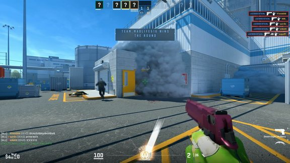

跨过细缝框选，成片自动无缝拼接
打游戏两小时，中间切出去回消息或锁屏离开的空白都会自动折成细缝。剪辑框跨过细缝时，导出器会自动剔除未选中的杂段，把两段高光首尾相接。
Counter-Strike 2
Counter-Strike 2
中间 35 分钟桌面杂段已折叠剔除
导出：0:24 纯享 MP4
纯显卡硬编循环回放。无论是团战五杀高光还是一闪而过的偶现报错，按一下快捷键，随时倒回现场。

偶现崩溃从不等你打开录屏软件。呼出回放，用键盘 , 与 . 逐帧微调到异常弹出的那一刻，右键 Ctrl+C 直接把高清原帧贴进工作群。
录制的是整块屏幕，发出去的只需是目标窗口。点一下「选窗口」，自动按记录下的窗口坐标走显卡硬件裁剪，支持 H.264、HEVC、AV1 与 GIF 秒存秒发。
告别臃肿浏览器套壳。基于原生 MoonBit / C++ 与 D3D11VA 硬编硬解构建，采集纹理不经 CPU 内存回读，4K 240Hz 高刷屏下依然无感。
打游戏两小时，中间切出去回消息或锁屏离开的空白都会自动折成细缝。剪辑框跨过细缝时，导出器会自动剔除未选中的杂段，把两段高光首尾相接。
默认走显卡独立媒体单元 H.265 编码，画面静止或锁屏休眠时 0 写入，超出设定回溯时长自动回收最旧分片。
免费 · 无广告 · 仅存本机 · Windows 11 (x64) · macOS 版即将推出